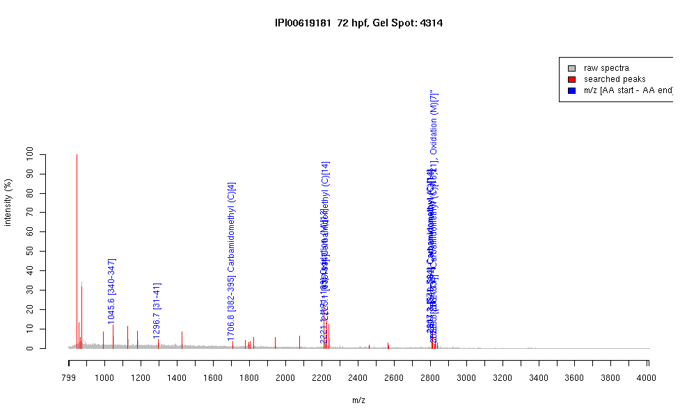

| Name | PREDICTED: similar to zinc finger protein585B |
|---|---|
| MW | 75720.3 |
| PI | 9.06 |
| Mascot Protein Score | 70 |
| Masses (matched / unmatched) | 10 / 30 |

| Peptide | MZ (calc) | MZ (observed) | Error (DA) | Error (PPM) | Start | Stop | Modifications |
|---|---|---|---|---|---|---|---|
| QYLTDHLR | 1045.5425 | 1045.5671 | 0.0246 | 24 | 340 | 347 | |
| MHTGEKLHICK | 1296.6552 | 1296.7198 | 0.0646 | 50 | 31 | 41 | |
| SHTCHQCGKSFTWK | 1706.7526 | 1706.8002 | 0.0476 | 28 | 382 | 395 | Carbamidomethyl (C)[4] |
| VHTGEKPFTLNIMKMAFIK | 2221.1873 | 2221.123 | -0.0643 | -29 | 171 | 189 | Oxidation (M)[13] |
| EHIKVHTGETPYTCHQCGK | 2225.0227 | 2225.1228 | 0.1001 | 45 | 83 | 101 | Carbamidomethyl (C)[14] |
| VHTGEKPHICPQCGKSFTQK | 2225.0955 | 2225.1228 | 0.0273 | 12 | 115 | 134 | |
| SHLIIHSGEKPYSCQQCQSTFTQK | 2807.324 | 2807.2976 | -0.0264 | -9 | 571 | 594 | Carbamidomethyl (C)[14] |
| QYLTDHLRIHTGEKPYTCQYCGK | 2811.334 | 2811.3201 | -0.0139 | -5 | 340 | 362 | Carbamidomethyl (C)[18] |
| DHMKIHTGEKPYTCQQCGTSFTWK | 2826.2798 | 2826.3135 | 0.0337 | 12 | 288 | 311 | |
| QNYTEHMRIHTGEKPHTCTQCGK | 2829.2612 | 2829.3198 | 0.0586 | 21 | 312 | 334 | "Carbamidomethyl (C)[18,21], Oxidation (M)[7]" |